2025 National 5 Biology - Paper 1 questions
Source: Scottish Qualifications Authority (SQA) / Qualifications Scotland. This is a StemInteract HTML companion, not an official HTML edition. Selectable text is supplied alongside original page images. Use the images or original PDF for equations, powers, fractions, vector notation, tables and diagrams; text extraction cannot fully preserve mathematical layout.
Jump to a question
PDF page 1
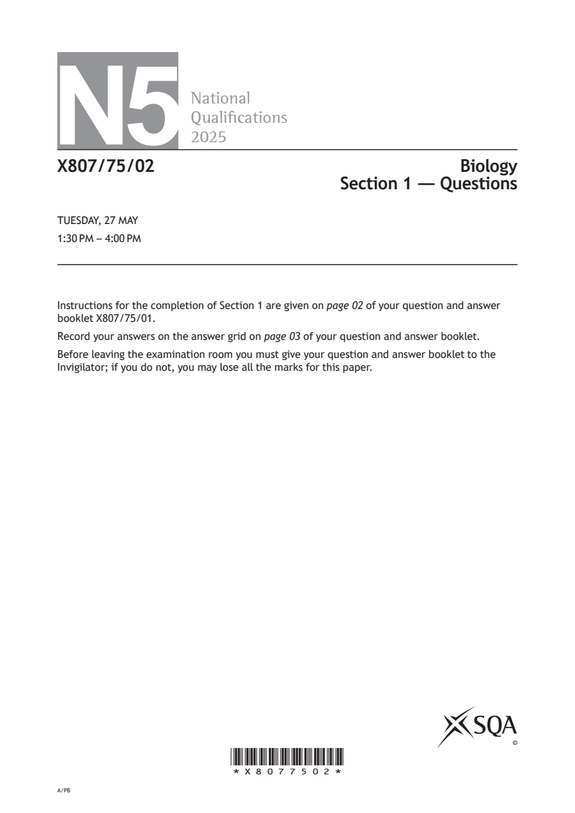
Selectable page text
N5
National
Qualications
2025
X807/75/02 Biology
Section 1 — Questions
TUESDAY, 27 MAY
1:30 PM – 4:00 PM
Instructions for the completion of Section 1 are given on page 02 of your question and answer
booklet X807/75/01.
Record your answers on the answer grid on page 03 of your question and answer booklet.
Before leaving the examination room you must give your question and answer booklet to the
Invigilator; if you do not, you may lose all the marks for this paper.
©
*X8077502*
A/PBPDF page 2
Paper 1, Question 1Paper 1, Question 2Paper 1, Question 3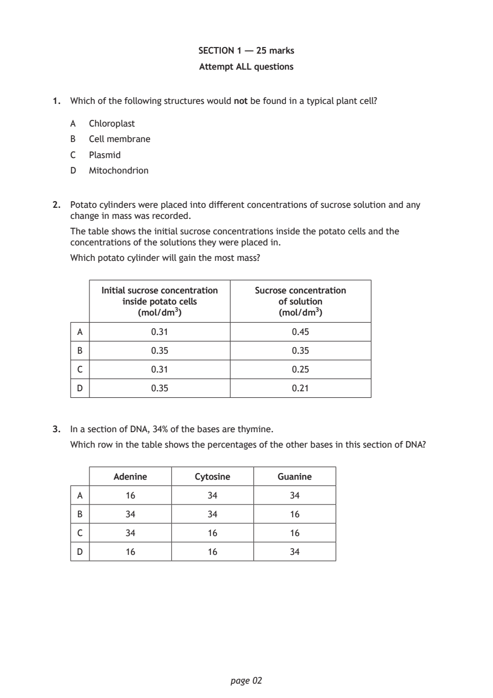
Selectable page text
SECTION 1 — 25 marks
Attempt ALL questions
1. Which of the following structures would not be found in a typical plant cell?
A Chloroplast
B Cell membrane
C Plasmid
D Mitochondrion
2. Potato cylinders were placed into different concentrations of sucrose solution and any
change in mass was recorded.
The table shows the initial sucrose concentrations inside the potato cells and the
concentrations of the solutions they were placed in.
Which potato cylinder will gain the most mass?
Initial sucrose concentration Sucrose concentration
inside potato cells of solution
(mol/dm³) (mol/dm³)
A 0.31 0.45
B 0.35 0.35
C 0.31 0.25
D 0.35 0.21
3. In a section of DNA, 34% of the bases are thymine.
Which row in the table shows the percentages of the other bases in this section of DNA?
Adenine Cytosine Guanine
A 16 34 34
B 34 34 16
C 34 16 16
D 16 16 34
page 02PDF page 3
Paper 1, Question 4Paper 1, Question 5Paper 1, Question 6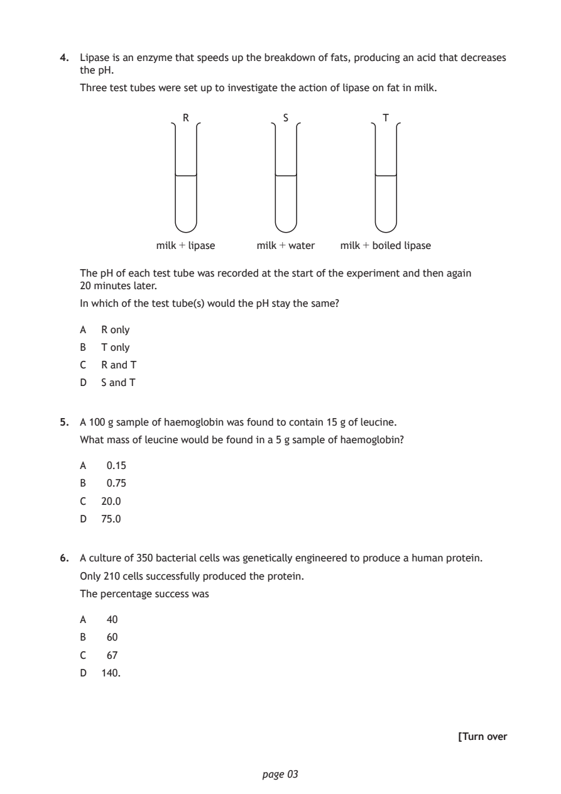
Selectable page text
4. Lipase is an enzyme that speeds up the breakdown of fats, producing an acid that decreases
the pH.
Three test tubes were set up to investigate the action of lipase on fat in milk.
R S T
milk + lipase milk + water milk + boiled lipase
The pH of each test tube was recorded at the start of the experiment and then again
20 minutes later.
In which of the test tube(s) would the pH stay the same?
A R only
B T only
C R and T
D S and T
5. A 100 g sample of haemoglobin was found to contain 15 g of leucine.
What mass of leucine would be found in a 5 g sample of haemoglobin?
A 0.15
B 0.75
C 20.0
D 75.0
6. A culture of 350 bacterial cells was genetically engineered to produce a human protein.
Only 210 cells successfully produced the protein.
The percentage success was
A 40
B 60
C 67
D 140.
[Turn over
page 03PDF page 4
Paper 1, Question 7Paper 1, Question 8Paper 1, Question 9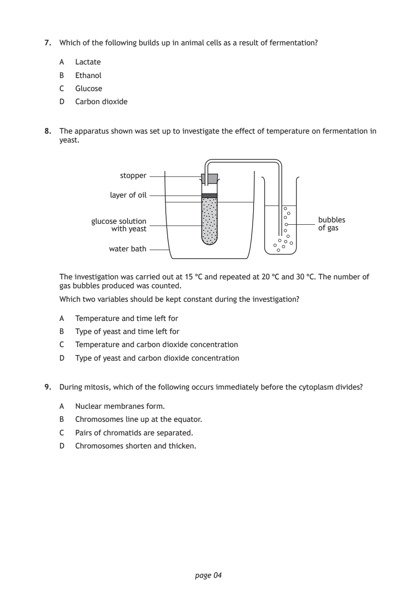
Selectable page text
7. Which of the following builds up in animal cells as a result of fermentation?
A Lactate
B Ethanol
C Glucose
D Carbon dioxide
8. The apparatus shown was set up to investigate the effect of temperature on fermentation in
yeast.
stopper
layer of oil
glucose solution bubbles
with yeast of gas
water bath
The investigation was carried out at 15 °C and repeated at 20 °C and 30 °C. The number of
gas bubbles produced was counted.
Which two variables should be kept constant during the investigation?
A Temperature and time left for
B Type of yeast and time left for
C Temperature and carbon dioxide concentration
D Type of yeast and carbon dioxide concentration
9. During mitosis, which of the following occurs immediately before the cytoplasm divides?
A Nuclear membranes form.
B Chromosomes line up at the equator.
C Pairs of chromatids are separated.
D Chromosomes shorten and thicken.
page 04PDF page 5
Paper 1, Question 10Paper 1, Question 11Paper 1, Question 12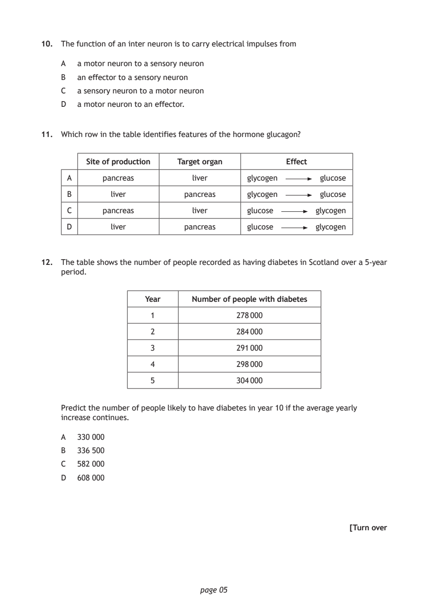
Selectable page text
10. The function of an inter neuron is to carry electrical impulses from
A a motor neuron to a sensory neuron
B an effector to a sensory neuron
C a sensory neuron to a motor neuron
D a motor neuron to an effector.
11. Which row in the table identifies features of the hormone glucagon?
Site of production Target organ Effect
A pancreas liver glycogen glucose
B liver pancreas glycogen glucose
C pancreas liver glucose glycogen
D liver pancreas glucose glycogen
12. The table shows the number of people recorded as having diabetes in Scotland over a 5-year
period.
Year Number of people with diabetes
1 278 000
2 284 000
3 291 000
4 298 000
5 304 000
Predict the number of people likely to have diabetes in year 10 if the average yearly
increase continues.
A 330 000
B 336 500
C 582 000
D 608 000
[Turn over
page 05PDF page 6
Paper 1, Question 13Paper 1, Question 14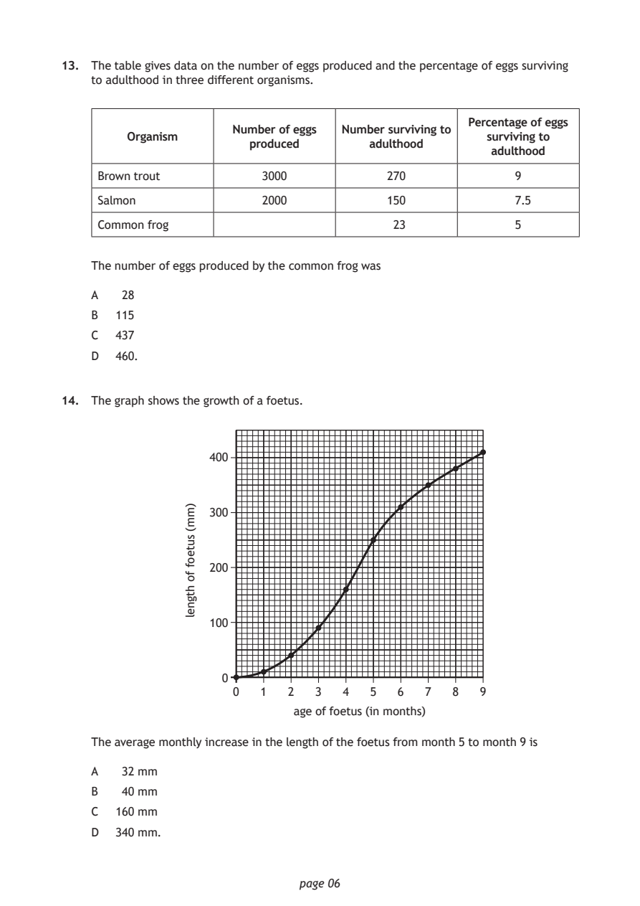
Selectable page text
13. The table gives data on the number of eggs produced and the percentage of eggs surviving
to adulthood in three different organisms.
Percentage of eggs
Number of eggs Number surviving to
Organism surviving to
produced adulthood
adulthood
Brown trout 3000 270 9
Salmon 2000 150 7.5
Common frog 23 5
The number of eggs produced by the common frog was
A 28
B 115
C 437
D 460.
14. The graph shows the growth of a foetus.
400
300
200
100
0
0 1 2 3 4
age of foetus (in months)
page 06
)mm(
suteof
fo
htgnel
5 6 7 8 9
The average monthly increase in the length of the foetus from month 5 to month 9 is
A 32 mm
B 40 mm
C 160 mm
D 340 mm.PDF page 7
Paper 1, Question 15Paper 1, Question 16Paper 1, Question 17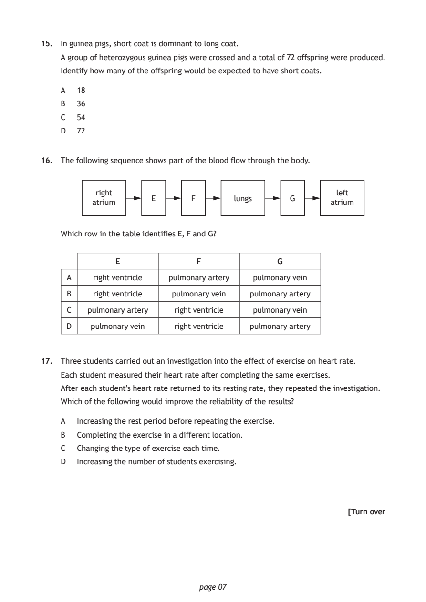
Selectable page text
15. In guinea pigs, short coat is dominant to long coat.
A group of heterozygous guinea pigs were crossed and a total of 72 offspring were produced.
Identify how many of the offspring would be expected to have short coats.
A 18
B 36
C 54
D 72
16. The following sequence shows part of the blood flow through the body.
right left
E F lungs G
atrium atrium
Which row in the table identifies E, F and G?
E F G
A right ventricle pulmonary artery pulmonary vein
B right ventricle pulmonary vein pulmonary artery
C pulmonary artery right ventricle pulmonary vein
D pulmonary vein right ventricle pulmonary artery
17. Three students carried out an investigation into the effect of exercise on heart rate.
Each student measured their heart rate after completing the same exercises.
After each student’s heart rate returned to its resting rate, they repeated the investigation.
Which of the following would improve the reliability of the results?
A Increasing the rest period before repeating the exercise.
B Completing the exercise in a different location.
C Changing the type of exercise each time.
D Increasing the number of students exercising.
[Turn over
page 07PDF page 8
Paper 1, Question 18Paper 1, Question 19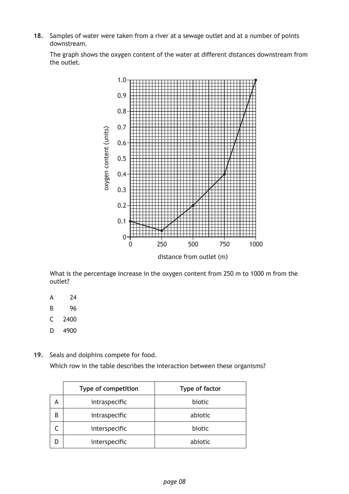
Selectable page text
18. Samples of water were taken from a river at a sewage outlet and at a number of points
downstream.
The graph shows the oxygen content of the water at different distances downstream from
the outlet.
page 08
)stinu(
tnetnoc
negyxo
1.0
0.9
0.8
0.7
0.6
0.5
0.4
0.3
0.2
0.1
0
0 250 500 750 1000
distance from outlet (m)
What is the percentage increase in the oxygen content from 250 m to 1000 m from the
outlet?
A 24
B 96
C 2400
D 4900
19. Seals and dolphins compete for food.
Which row in the table describes the interaction between these organisms?
Type of competition Type of factor
A intraspecific biotic
B intraspecific abiotic
C interspecific biotic
D interspecific abioticPDF page 9
Paper 1, Question 20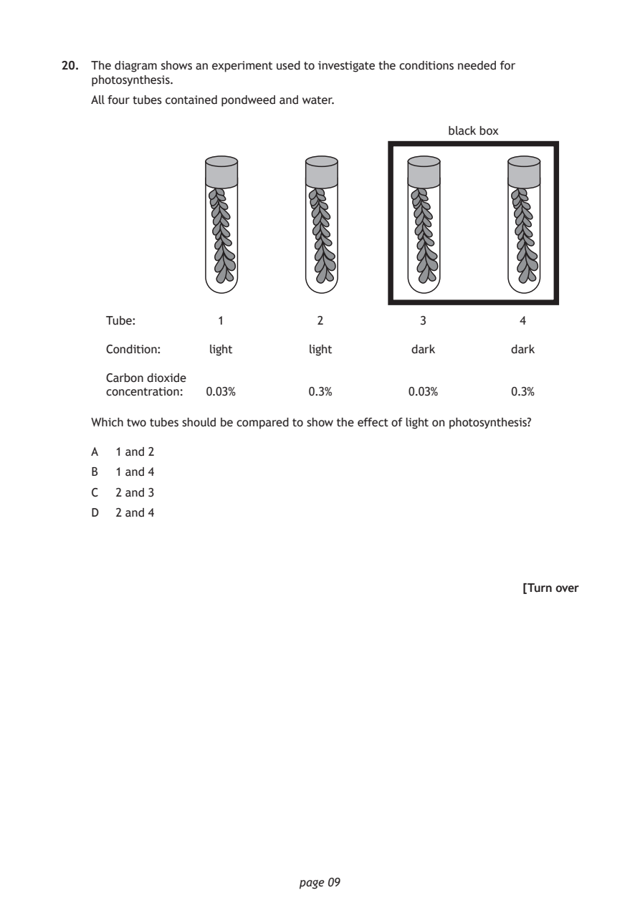
Selectable page text
20. The diagram shows an experiment used to investigate the conditions needed for
photosynthesis.
All four tubes contained pondweed and water.
black box
Tube: 1 2 3 4
Condition: light light dark dark
Carbon dioxide
concentration: 0.03% 0.3% 0.03% 0.3%
Which two tubes should be compared to show the effect of light on photosynthesis?
A 1 and 2
B 1 and 4
C 2 and 3
D 2 and 4
[Turn over
page 09PDF page 10
Paper 1, Question 21Paper 1, Question 22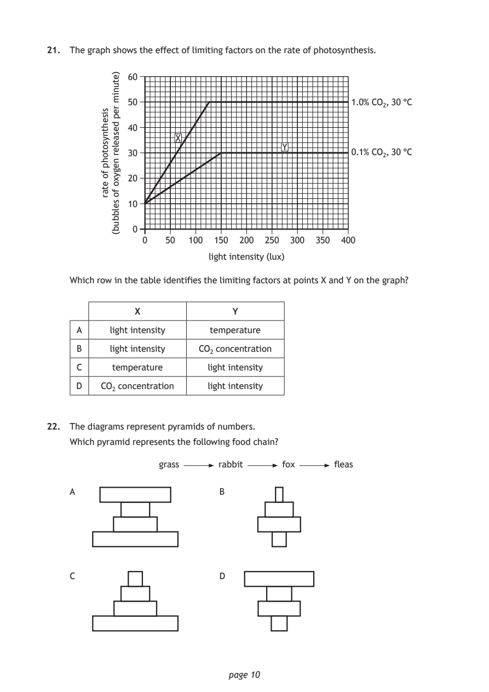
Selectable page text
21. The graph shows the effect of limiting factors on the rate of photosynthesis.
page 10
sisehtnysotohp
fo
etar
)etunim
rep
desaeler
negyxo
fo
selbbub(
60
50 1.0% CO₂, 30 °C
40
X
Y
30 0.1% CO₂, 30 °C
20
10
0
0 50 100 150 200 250 300 350 400
light intensity (lux)
Which row in the table identifies the limiting factors at points X and Y on the graph?
X Y
A light intensity temperature
B light intensity CO₂ concentration
C temperature light intensity
D CO₂ concentration light intensity
22. The diagrams represent pyramids of numbers.
Which pyramid represents the following food chain?
grass rabbit fox fleas
A B
C DPDF page 11
Paper 1, Question 23Paper 1, Question 24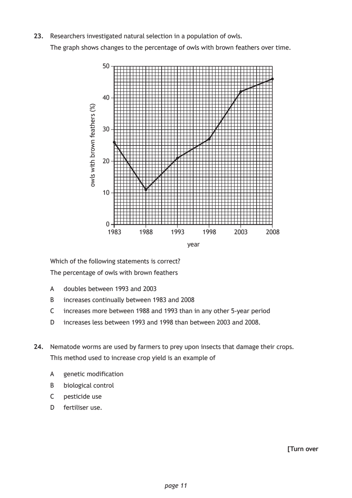
Selectable page text
23. Researchers investigated natural selection in a population of owls.
The graph shows changes to the percentage of owls with brown feathers over time.
50
40
30
20
10
0
year
page 11
)%(
srehtaef
nworb
htiw
slwo
1983 1988 1993 1998 2003 2008
Which of the following statements is correct?
The percentage of owls with brown feathers
A doubles between 1993 and 2003
B increases continually between 1983 and 2008
C increases more between 1988 and 1993 than in any other 5-year period
D increases less between 1993 and 1998 than between 2003 and 2008.
24. Nematode worms are used by farmers to prey upon insects that damage their crops.
This method used to increase crop yield is an example of
A genetic modification
B biological control
C pesticide use
D fertiliser use.
[Turn overPDF page 12
Paper 1, Question 25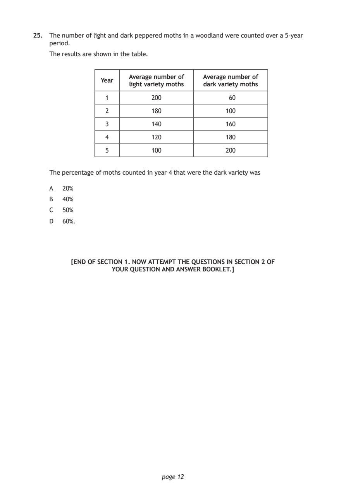
Selectable page text
25. The number of light and dark peppered moths in a woodland were counted over a 5-year
period.
The results are shown in the table.
Average number of Average number of
Year
light variety moths dark variety moths
1 200 60
2 180 100
3 140 160
4 120 180
5 100 200
The percentage of moths counted in year 4 that were the dark variety was
A 20%
B 40%
C 50%
D 60%.
[END OF SECTION 1. NOW ATTEMPT THE QUESTIONS IN SECTION 2 OF
YOUR QUESTION AND ANSWER BOOKLET.]
page 12